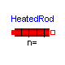
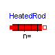
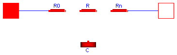

THIS IS AN OBSOLETE PACKAGE which is only kept for backward compatibility. Use instead package "Modelica.Thermal.HeatTransfer".
This package contains components to model 1-dimensional heat flow and contains the following components:
Examples Examples to demonstrate usage Interfaces Connectors and partial models for 1D heat flow TemperatureSource Temperature source (temperature in Kelvin) TemperatureSource_C Celsius temperature source HeatResistance Ideal heat flow without storage of energy HeatCapacitance Ideal heat storage in a block without heat flow Convection Heat flow by convection HeatedRod 1-dim. heat flow in a rod with complete insulation Sensors Heatflux and temperature sensors
Release Notes:
Copyright © 2000-2002, DLR.
The ModelicaAdditions.HeatFlow1D package is free software; it can be redistributed and/or modified under the terms of the Modelica license, see the license conditions and the accompanying disclaimer in the documentation of package Modelica in file "Modelica/package.mo".
ModelicaAdditions.HeatFlow1D.TemperatureSource

model TemperatureSource "Temperature source" Interfaces.Surface_b surface_b; Modelica.Blocks.Interfaces.InPort inPort(final n=1); equation surface_b.T = inPort.signal[1]; end TemperatureSource;
ModelicaAdditions.HeatFlow1D.TemperatureSource_C

model TemperatureSource_C "Celsius temperature source" Interfaces.Surface_b surface_b; Modelica.Blocks.Interfaces.InPort inPort(final n=1); equation surface_b.T = inPort.signal[1] - Modelica.Constants.T_zero; end TemperatureSource_C;
ModelicaAdditions.HeatFlow1D.HeatResistance
| Name | Default | Description |
|---|---|---|
| A | area of heat resistance [m2] | |
| L | length of heat resistance [m] | |
| lambda | thermal conductivity of material [W/(m.K)] |
model HeatResistance "Ideal heat flow without storage of energy" parameter SI.Area A(min=0) "area of heat resistance"; parameter SI.Length L(min=Modelica.Constants.eps) "length of heat resistance"; parameter SI.ThermalConductivity lambda(min=0) "thermal conductivity of material"; Interfaces.Surface_a surface_a; Interfaces.Surface_b surface_b; equation surface_a.q = lambda*A/L*(surface_a.T - surface_b.T); surface_b.q = -surface_a.q; end HeatResistance;

| Name | Default | Description |
|---|---|---|
| m | mass of block [kg] | |
| c | specifc heat capacity of block [J/(kg.K)] | |
| T0 | 20 | initial temperature of block [degC] |
model HeatCapacitance
"Ideal heat storage in a block without heat flow"
parameter SI.Mass m(min=0) "mass of block";
parameter SI.SpecificHeatCapacity c(min=0) "specifc heat capacity of block";
parameter SI.Conversions.NonSIunits.Temperature_degC T0=20
"initial temperature of block";
Interfaces.Surface_a surface_a(T(final start=T0 - Modelica.Constants.
T_zero));
equation
surface_a.q = c*m*der(surface_a.T);
end HeatCapacitance;
| Name | Default | Description |
|---|---|---|
| P | perimeter of convection surface [m] | |
| L | length of element [m] | |
| h | convection heat transfer coefficient [W/(m2.K)] |
model Convection "Heat flow by convection" parameter SI.Length P "perimeter of convection surface"; parameter SI.Length L "length of element"; parameter SI.CoefficientOfHeatTransfer h "convection heat transfer coefficient"; Interfaces.Surface_a surface_a; Interfaces.Surface_b surface_b; equation surface_a.q = h*P*L*(surface_a.T - surface_b.T); surface_b.q = -surface_a.q; end Convection;

| Name | Default | Description |
|---|---|---|
| n | 5 | number of heat capacity elements (= number of states) |
| L | lenght of rod [m] | |
| A | area of rod [m2] | |
| rho | density of rod material [kg/m3] | |
| lambda | thermal conductivity of material [W/(m.K)] | |
| c | specifc heat capacity [J/(kg.K)] | |
| T0 | initial temperature [degC] |
model HeatedRod
"1-dimensional heat flow in a rod with complete insulation"
parameter Integer n(min=1) = 5
"number of heat capacity elements (= number of states)";
parameter SI.Length L(min=Modelica.Constants.eps) "lenght of rod";
parameter SI.Area A(min=0) "area of rod";
parameter SI.Density rho(min=0) "density of rod material";
parameter SI.ThermalConductivity lambda(min=0) "thermal conductivity of material";
parameter SI.SpecificHeatCapacity c(min=0) "specifc heat capacity";
parameter SI.Conversions.NonSIunits.Temperature_degC T0 "initial temperature";
SI.Conversions.NonSIunits.Temperature_degC T[n + 2]
"Temperature at the grid points (of the heat capacity elements and the borders)"
;
SI.Position s[n + 2] "Distance between surface_a and T[i]";
protected
parameter SI.Length Lelem=L/n "length of a HeatCapacity element";
parameter SI.Mass mElem=A*Lelem*rho "mass of a HeatCapacity element";
public
Interfaces.Surface_a surface_a;
Interfaces.Surface_b surface_b;
protected
HeatResistance R0(
A=A,
L=Lelem/2,
lambda=lambda);
HeatResistance Rn(
A=A,
L=Lelem/2,
lambda=lambda);
HeatResistance R[n - 1](
A=fill(A, n - 1),
L=fill(Lelem, n - 1),
lambda=fill(lambda, n - 1));
HeatCapacitance C[n](
m=fill(mElem, n),
c=fill(c, n),
T0=fill(T0, n));
equation
connect(surface_a, R0.surface_a);
connect(surface_b, Rn.surface_b);
// connect R0 and Rn
connect(R0.surface_b, C[1].surface_a);
connect(Rn.surface_a, C[n].surface_a);
// connect R[i] and C[i]
for i in 1:n - 1 loop
connect(C[i].surface_a, R[i].surface_a);
connect(R[i].surface_b, C[i + 1].surface_a);
end for;
// determine temperature and position vector
T[1] = surface_a.T;
T[n + 2] = surface_b.T;
for i in 1:n loop
T[i + 1] = C[i].surface_a.T - Modelica.Constants.T_zero;
end for;
s[1] = 0;
s[2] = Lelem/2;
s[n + 2] = L;
for i in 3:n + 1 loop
s[i] = Lelem/2 + (i - 2)*Lelem;
end for;
end HeatedRod;